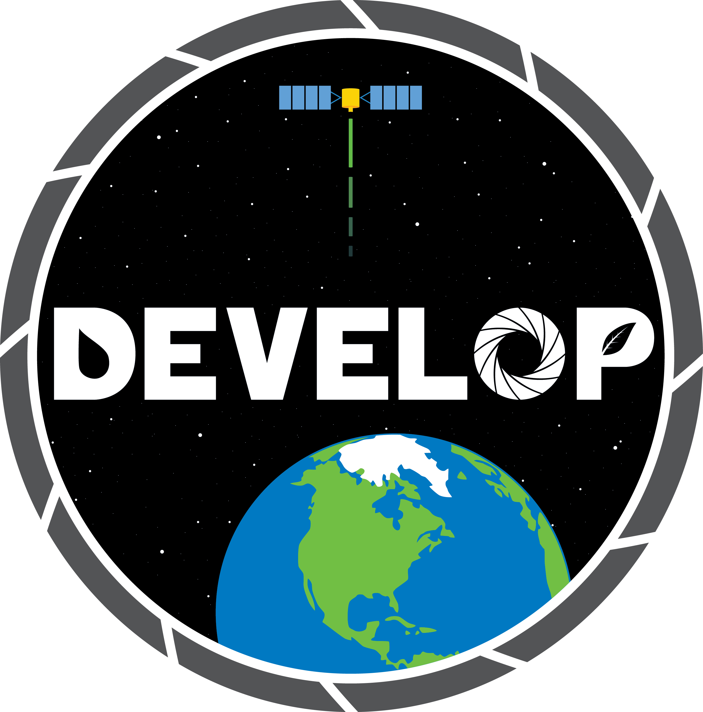

Program Overview
The Wyoming Cross-Cutting team at NASA DEVELOP aims to create a tool with the ability to accurately model skyglow from artificial sources using publicly available Suomi NPP VIIRS Day/Night Band imagery. We hope that this open source tool informs future research and decision-making to mitigate light pollution and to inform the public of the phenomenon.

Key reasons for the Skyglow Estimation Toolbox:
- The NPS currently monitors the night sky using in situ surveys with Unihedron Sky Quality Meters. While these cameras take detailed images of the hemisphere, it is costly to travel to these sites and set up the equipment. These observations also only contain information from a single vantage point and at a single point in time. The park service desires a tool that allows them to continually monitor the quality of the night sky at a regional scale.
- Light pollution disrupts circadian rhythms and the production of the hormone melatonin in humans and has been linked to various health disorders such as obesity, tumor growth, depression, and insomnia.
- Light regulates the day-night cycles of plants and animals, therefore light pollution affects the growth of plants, disorients and confuses animals, and impacts breeding cycles.
- With nearly 200,000,000 outdoor light fixtures in the United States, an estimated $2 billion in energy costs is wasted every year due to poorly designed fixtures.
Features
SET currently offers several key features for measuring light pollution:
- Read a geoTIFF file from VIIRS Day/Night Band data as a baseline numpy array to calculate skyglow.
- Create a kernel based on various user-defined parameters: zenith angle, azimuth angle, and regional latitude. Save the kernel in the form of a geoTIFF file.
- Calculate sky brightness by convolving the kernel over the VIIRS data and applying numpy’s Fast Fourier Transform algorithm.
- Allow the user to import a previously created kernel to shorten the runtime to a matter of seconds rather than hours.
- Produce an artificial skyglow map in the form of a TIFF image that can support light pollution measurements and decisions.
This website gives a detailed guideline of the SET program and how to use/edit it. With light pollution rapidly becoming an urgent issue for the community, scientists are increasingly relying on computers to apply methods of precisely measuring sky brightness. In this field, the biggest advantages SET provides is its simple interface, accurate results, and dynamic implementation.
Go ahead and try SET now! Follow the installation instructions and begin making your own artificial skyglow maps to gauge light pollution wherever you choose. SET is designed to be as user-friendly and accessible to researchers and the public, so please contact the team to let us know how to make SET better!
Note
SET is currently in its early beta phase. The program will be continually updated until
it is released to the public.
Research Parameters
Study Area:
- Regional (National Park scale) with 300 km square buffer
- User-defined location
Earth Observations:
- Suomi NPP Visible Infrared Imaging Radiometer Suite (VIIRS) Day/Night Band
Software Utilized:
- Esri’s ArcGIS – raster manipulation, statistical interpretation, and map creation
- Python – development of light propagation model, user interface
Literature
Foundational Papers
Falchi et al,. 2016.
Other Methodology Papers
Light Pollution Impact Studies
{kind=link}